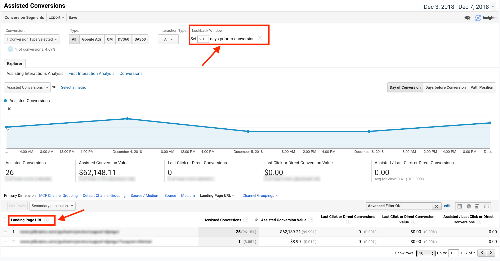

LINKS
January 19, 2019
This is the number (and monetary value) of sales and conversions the channel assisted. If a channel appears anywhere—except as the final interaction—on a conversion path, it is considered an assist for that conversion. The higher these numbers, the more important the assist role of the channel.
However, an assisted conversions report has a number of limitations. Below we’ll take a look at how these limitations can be overcome by using a BigQuery export of Google Analytics data.
Let’s consider an example: say, we want to check how many assisted conversions (purchases in our case) can be attributed to a particular page:

Obviously, if we want to attribute the purchases to a particular page, we should pick “Page” as a primary dimension. But it’s not that easy; and therein lies the first limitation. Google doesn’t allow “Page” to be used as a primary dimension in the report, but suggests the use of “Landing Page URL”, referring to the page through which visitors enter the site. Thus, the conversion will not be attributed to a page if somebody visited it (and made a purchase afterward) but entered the site through another page. But, as we have no other choice, we have to pick “Landing Page URL” in the Google Analytics interface.
The second limitation is the lookback window - its maximum value is 90 days. But fortunately this limitations only exist in the Google Analytics interface. In BigQuery we easily can put these limitations behind.
Alright, let’s see how exactly we can do this. First, we should try to reproduce the report in BigQuery. Take a look at the query below:
Update July 18, 2020: Legacy SQL is used in the example below. If you need Standard SQL implementation you can find it here.
SELECT
revenue,
hits.transaction.transactionId,
MIN(lookback_window) as lookback_window
FROM (SELECT
visitor_ID_pageviews,
visitor_ID_purchases,
revenue,
hits.transaction.transactionId,
hit.timestamp_transaction,
DATEDIFF(hit.timestamp_transaction,hit.timestamp) as lookback_window
FROM (SELECT
fullVisitorId as visitor_ID_pageviews, visitID, visitNumber, hits.page.pagePath,
STRFTIME_UTC_USEC(SEC_TO_TIMESTAMP(visitStartTime + hits.time/1000),"%Y-%m-%d %H:%M:%S") as hit.timestamp
FROM
TABLE_DATE_RANGE([pro-tracker-id.ga_sessions_], TIMESTAMP('2018-09-03'), TIMESTAMP('2018-12-07'))
WHERE
hits.page.pagePath CONTAINS "/page_url/" AND hits.hitNumber = 1
GROUP BY
visitor_ID_pageviews,
visitNumber, visitID,
hits.page.pagePath,
hit.timestamp)
AS table_with_visits
INNER JOIN
(SELECT
fullVisitorId as visitor_ID_purchases,
totals.totalTransactionRevenue/1000000 AS revenue,
hits.transaction.transactionId,
STRFTIME_UTC_USEC(SEC_TO_TIMESTAMP(visitStartTime + hits.time/1000),"%Y-%m-%d %H:%M:%S") as hit.timestamp_transaction
FROM
TABLE_DATE_RANGE([pro-tracker-id.ga_sessions_], TIMESTAMP('2018-12-03'), TIMESTAMP('2018-12-07'))
WHERE
totals.transactions > 0
GROUP BY
visitor_ID_purchases,
revenue,
hits.transaction.transactionId,
hit.timestamp_transaction)
AS table_with_transactions
ON
table_with_visits.visitor_ID_pageviews = table_with_transactions.visitor_ID_purchases
WHERE
hits.transaction.transactionId != 'null' AND hit.timestamp_transaction > hit.timestamp
ORDER BY
revenue)
WHERE
lookback_window < 91
GROUP BY
visitor_ID_pageviews,
visitor_ID_purchases,
revenue,
hits.transaction.transactionIdBrief overview of what we are doing in the query:
1) In the first subquery we select the particular page visitors. It is important to note that this query should include users over a period of 90 days before the period during which we want to analyze the purchases. That makes it possible to reproduce the lookback window for up to 90 days.
2) It is necessary to include the hits.number = 1 condition in the subquery. This means that we will only count entrances, and this is exactly a way to recreate the “Landing page URL” dimension.
3) The next step is to join this subquery with the second one using the fullvisitorID column. The second subquery contains purchases data for a chosen period of time.
It is essential to have the following WHERE condition: hit.timestamp_transaction > hit.timestamp so that only those purchases which take place after a pageview will be included. Otherwise, there is a chance to include the purchases which took place before the page visit.
5) It is also very important to specify lookback_window < 91. This will reproduce the same lookback window limit which exists in the Google Analytics interface.
And that is all it takes.
While reading about the query structure, you have probably figured out how to overcome the limitations, but let’s talk about them in some detail.
The first limitation (regarding Landing page URL) can be resolved by simply removing the hits.number = 1 condition. After that, all the visitors to the chosen page will be counted, not only those who have entered the website through it. Therefore, we can use the “Page” dimension which doesn’t exist in Google Analytics interface.
We can also quickly resolve the second limitation with the lookback window, simply by changing the number here: lookback_window < 91. For example: set it to 100 and you will see the conversions which happen from one to 100 days after the pageview. But, keep in mind that it will only work if you will simultaneously change the time range in the first subquery. So, in the current example you should change 2018-09-03 to 2018-08-24 in order to expand the lookback window up to 100 days.
To summarize: we have learned that it is possible to replicate the Assisted Conversions report in BigQuery. Indeed, we can make it more flexible. For example, we can add a Page dimension or expand the lookback window if necessary. Maybe it is not the case that you need these exact features right away. However, BigQuery enables you to obtain additional flexibility compared to Google Analytics interface, as well as benefit your analytics and reporting, and hence the whole marketing evaluation process.
LINKS